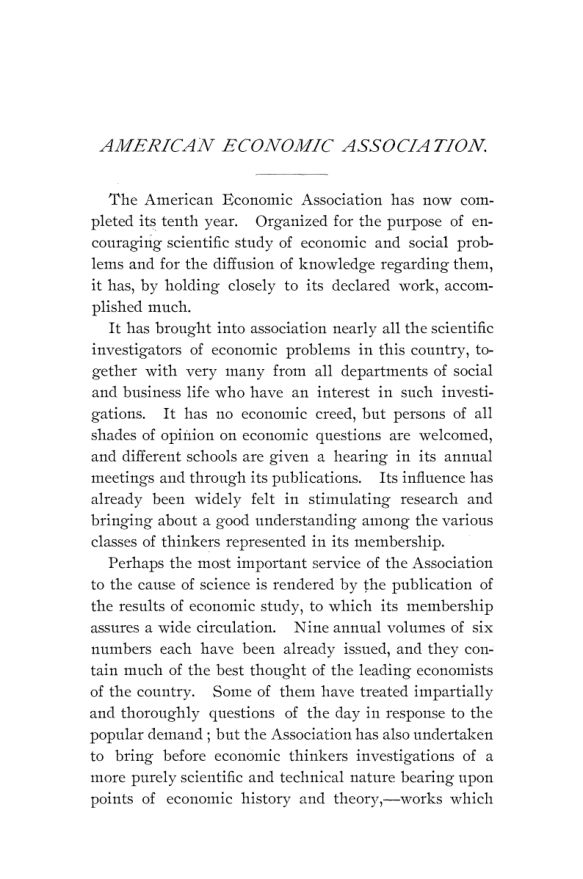

Nova York, 1894: o cheque, o monopólio e os desempregados
Leitura: 9 min
Columbia College, dezembro de 1894: quanto do varejo americano já se pagava em cheque, se o monopólio cabia na teoria econômica e quem eram, afinal, os desempregados.


Em 1833, o pai de Seth Low embarcou para a China sabendo que passaria um ano sem dar notícias. Viveu para ver um telegrama enviado à noite de seu escritório em Nova York ser respondido na manhã seguinte, da China, do Japão ou da Índia. Low, presidente do Columbia College, contou a história ao receber a American Economic Association, e repetiu o comentário do pai sobre saber em Nova York o preço do chá na China na véspera:
“seria impossível perder dinheiro; […] agora é impossível ganhá-lo” (“it would be impossible to lose money; […] it is now impossible to make money”)
O anfitrião tirou daí a tese da semana. Em tempos de mudança tão funda, seria difícil descobrir leis novas, mas era a hora certa de testar a economia política do passado: a lei que resistisse àquela confusão podia ser dada por assentada. Low lembrou que o depósito bancário, coisa dos últimos cinquenta anos, mudara a face do comércio e das finanças tanto quanto qualquer outra novidade.
A sétima reunião anual durou de 26 a 29 de dezembro de 1894, em Nova York, com público incomumente grande e seis sessões. John B. Clark presidiu e abriu com o discurso sobre o apelo às forças legais na vida econômica. Os textos de Clark, Carroll D. Wright, Davis R. Dewey, Arthur T. Hadley e John Graham Brooks saíram por inteiro no volume IX, números 5 e 6, que é o nº 44 deste Arquivo. Aqui ficam os resumos e, sobretudo, os debates. O trabalho de Samuel M. Lindsay sobre a bolsa de trabalho de Paris não foi apresentado: o autor adoeceu.
Quanto do varejo americano já se pagava em cheque?
David Kinley, da Universidade de Illinois, fez a pergunta com dados do comptroller of the currency, o supervisor dos bancos nacionais. Responderam 2.465 bancos nacionais. Cada um informou quanto merceeiros, açougueiros, alfaiates, vendedores de móveis e de combustível depositaram no dia de compensação mais próximo de 30 de junho, separando moeda de cheques e outros instrumentos de crédito.
A conclusão contrariou o senso comum. O uso de cheques não cresce simplesmente com a população nem com o tamanho da cidade: oscila, sobe até certo ponto e depois se estabiliza ou cai um pouco. O crédito não se expandia mais depressa que o volume total de negócios. Kinley usou o resultado contra quem pedia mais moeda sem olhar os outros elementos da circulação.
O debate mostrou o que a amostra não via. Thomas G. Shearman lembrou que a pesquisa só alcançava lugares com banco, e que havia no Alabama dezenove condados contíguos sem nenhum. No interior, disse, as compras se acertavam em contas de livro, que eram escambo puro. George Gunton viu nisso o contrário de uma vantagem: o comerciante que fornece semente e mantimento contra penhor da safra controla preço e juro ao mesmo tempo. O remédio seria ter mais bancos, e não menos.
O que os Estados Unidos vendiam à Ásia?
Worthington C. Ford, chefe do Bureau of Statistics, mediu um comércio cercado de mito. A Ásia vendia muito mais aos americanos do que comprava deles, e o que comprava dependia de um só produto, o óleo de iluminação. Algodões para a China e farinha de trigo para Hong Kong completavam a lista. Ford resumiu a pauta numa frase:
“A luz da Ásia é cada vez mais feita na América e na Rússia.” (“The light of Asia is more and more made in America and Russia.”)
O fecho de Ford olhava para a política. A China, estacionária, perdia mercado: suas sedas estavam desacreditadas, e seus chás eram deslocados pelos do Japão e do Ceilão. O Japão, reconhecido pela primeira vez como Estado soberano e com o prestígio da vitória, poderia fazer na Ásia o papel da Grã-Bretanha na Europa. Era à luz dessa preeminência japonesa, concluía, que o novo tratado dos Estados Unidos ganhava importância.
O monopólio é um desvio ou parte normal da economia?
Frederick C. Hicks, da Universidade do Missouri, atacou a premissa de Mill de que a teoria se constrói sobre a livre concorrência e depois se corrige. A força fundamental, disse, é o interesse próprio, que tanto se manifesta na rivalidade, a concorrência, quanto na unificação de interesses, o monopólio. Se o monopólio é natural à atividade econômica, tentar destruí-lo é inútil; o remédio para seus males seria regulá-lo, não exterminá-lo.
Lester F. Ward levou o argumento à biologia: também na natureza a concorrência livre é fase breve, e quem vence costuma ser o cardo e o espinho, não a melhor planta. A sociedade difere por ter previsão racional, e o governo é o consenso de que certas tendências naturais precisam de freio. F. H. Giddings negou que a teoria tivesse suposto concorrência ilimitada e citou Adam Smith, Ricardo e Walker. H. H. Powers respondeu que importava a impressão deixada pela escola, não as ressalvas:
“É pelo que afirmamos, não pelo que concedemos, que a posteridade nos julgará.” (“It is by what we assert, not by what we concede that posterity will judge us.”)
Quem eram, afinal, os desempregados?
Davis R. Dewey, do MIT, presidia a comissão de Massachusetts criada naquele verão para estudar, entre outros temas, o socorro de emergência de 1893–94. Advertiu que quase não havia estatística confiável: algumas cifras de sindicatos ingleses, o censo estadual de desemprego de 1885 e pouco mais. A máquina, as fábricas maiores e mais concentradas, o trabalho feminino e a imigração tornavam o deslocamento mais brusco do que uma geração antes.
O debate se fixou na volta ao campo, e os números foram desanimadores. E. R. L. Gould contou que, em Baltimore, um fazendeiro pediu quatro homens; o comitê de socorro escolheu vinte, sete aceitaram tentar, três foram e só um ficou. C. S. Walker lembrou que o homem que ganhava dois dólares por dia na cidade não iria ao campo por metade disso. Dewey lamentou que a discussão corresse para os remédios antes de responder à pergunta de base: quem são os desempregados?
Como andava a própria associação?
O relatório do secretário foi uma faxina. As associações filiais haviam parado de funcionar e de pagar, e nenhuma restava. Dos 132 sócios filiados por elas, 19 viraram sócios regulares. Somadas as exclusões por falta de pagamento e as renúncias, a lista encolheu, mas a receita, garantia o texto, não cairia, e a despesa seria menor. A Macmillan passou a vender as monografias fora do quadro social.
O Conselho reelegeu Clark e manteve Jeremiah W. Jenks como secretário, decidiu levar a reunião seguinte para algum lugar a oeste dos Alleghenies e recebeu convites de Indianápolis, St. Louis, Minneapolis e Ann Arbor. O resto da programação foi mais teórico: Henry C. Adams sobre a despesa pública, T. N. Carver sobre justiça na distribuição e no imposto, Frank Fetter sobre o padrão dos pagamentos diferidos, Albion W. Small sobre sociologia e economia, W. J. Ashley sobre a escola histórica e um debate sobre ensinar economia no colégio.
Na minha leitura
Na minha leitura, o trabalho de Kinley é o mais moderno do volume, e o debate que ele provocou é a melhor lição. Kinley teve a boa ideia de medir em vez de opinar, com uma amostra grande e um método declarado. Shearman e Gunton mostraram o limite: a amostra só via onde havia banco. Toda estatística de pagamentos carrega esse viés, e quem conclui sobre a necessidade de moeda olhando apenas para a parte bancarizada da economia corre o risco de errar justamente onde o crédito é mais caro.
A frase de Powers serve para qualquer escola, não só a clássica. Hicks e Ward pediam que a teoria tratasse a combinação como fato normal; Giddings respondia com as ressalvas que os clássicos de fato fizeram. Os dois lados tinham razão em planos diferentes: no texto, a teoria admitia limites à concorrência; na política que inspirou, a concorrência virou o fato quase único. O que um economista concede em nota de rodapé raramente chega ao legislador.
Glossário
- instrumentos de crédito
- cheques, letras e outros papéis que liquidam pagamentos sem uso de moeda física.
- comptroller of the currency
- órgão federal americano que supervisiona os bancos nacionais e recolhe seus relatórios.
- conta de livro
- fiado anotado no caderno do comerciante, acertado de tempos em tempos, muitas vezes sem dinheiro.
- penhor de safra (crop lien)
- garantia sobre a colheita futura dada pelo agricultor ao comerciante que lhe adianta insumos e mantimentos.
- coeficiente da despesa pública
- na definição de H. C. Adams, a porcentagem da renda bruta da nação gasta por meio do Estado.
- padrão de pagamentos diferidos
- a unidade em que se mede uma dívida de longo prazo, para que o credor receba de volta o mesmo valor.
- utilidade marginal
- satisfação trazida pela última unidade de um bem; base da teoria do valor dos marginalistas.
- pooling
- acordo entre ferrovias para dividir tráfego ou receitas, discutido no Congresso em 1894.
- Committee of Ten
- comissão de educadores cujo relatório sobre o currículo do ensino secundário motivou o debate da última sessão.
Artigos desta edição
- The Seventh Annual Meeting — Relatório da reunião; boas-vindas de Seth Low (Columbia College) e resposta de John B. Clark (pp. 39–50). Programa das seis sessões no Columbia College, de 26 a 29 de dezembro de 1894, decisões do Conselho, eleição de dirigentes e relatórios do secretário e do tesoureiro. O Conselho reelegeu Clark, manteve Jenks como secretário e levou a reunião seguinte para oeste dos Alleghenies. A Macmillan assumiu a venda das monografias fora do quadro social. O secretário relata o fim das associações filiais e a queda da lista de 786 para 661 nomes. Low conta a história do pai, que em 1833 esperava um ano por notícias da China; Clark descreve a associação como um mercado móvel onde as universidades trocam seus produtos. JSTOR
- Credit Instruments in Retail Trade — David Kinley (University of Illinois); debate com Thomas G. Shearman, George Gunton e E. W. Bemis (pp. 72–78). Com respostas de 2.465 bancos nacionais, Kinley mede a forma de pagamento nos depósitos de varejistas: 58% em cheques e outros instrumentos de crédito, 42% em moeda, sobre cerca de US$ 6 milhões. A fatia de cheques oscila com a população, sem crescer de modo contínuo, e o crédito não avança mais rápido que os negócios. Isso pesa contra aumentar a moeda sem olhar o resto da circulação. Shearman lembra os condados sem banco e as contas de livro; Gunton denuncia o penhor de safra e pede mais bancos; Bemis mostra a fatia de moeda nos pagamentos dos bancos nacionais subindo de 4,87% em 1881 para 9,39% em 1892. JSTOR
- Trade of the United States with the East — Worthington C. Ford (Chief of the United States Bureau of Statistics) (pp. 79–80). Ford mostra um comércio desequilibrado. Em 1894, cerca de 8% das importações americanas vieram do Oriente, e só 2% das exportações domésticas foram para lá. As vendas pouco cresciam: à China, US$ 4,29 milhões em 1821, quase tudo reexportação, e US$ 3,90 milhões em 1893, tudo produto americano. Óleo de iluminação, algodões e farinha somavam 77% das exportações à Ásia. A Índia britânica despontava como exportadora de trigo, algodão e juta; a China, estacionária, perdia mercado; o Japão, com o prestígio da vitória, poderia fazer na Ásia o papel da Grã-Bretanha na Europa, o que dava peso ao novo tratado. JSTOR
- Competition as a Basis of Economic Theory — Frederick C. Hicks (University of Missouri); debate com Lester F. Ward, F. H. Giddings e H. H. Powers (pp. 82–87). Hicks contesta a visão de Mill de que a teoria parte da livre concorrência e depois se corrige. O interesse próprio se expressa tanto na rivalidade quanto na unificação de interesses; a escassez, base do monopólio, está em toda parte; e a alta de preço de um bem é inseparável da queda de preço daquele dado em troca. Concorrência e combinação seriam igualmente normais, e o monopólio pediria regulação, não extermínio. Ward diz que, na natureza, a concorrência livre é fase breve vencida por espécies inferiores. Giddings cita Smith, Ricardo, Walker e Clark contra a acusação. Powers responde que a posteridade julga a escola pelo que ela afirma. JSTOR
- The Unemployed — Davis R. Dewey (Massachusetts Institute of Technology); debate com L. S. Rowe, E. R. L. Gould, C. S. Walker e John Franklin Crowell (pp. 64–71). Dewey apresenta a agenda da comissão de Massachusetts: socorro de emergência de 1893–94, agências públicas de emprego, trabalho rural, frentes de trabalho municipais, separação entre vadios e desempregados involuntários e trabalho de presos. A estatística é escassa, e a hipótese de trabalho vem da análise das condições industriais: máquinas, plantas maiores, trabalho feminino e imigração tornam o deslocamento mais duro. Rowe relata Berlim em 1891–92; Gould, o fazendeiro de Baltimore que pediu quatro homens e ficou com um; Walker e Crowell duvidam da volta ao campo, onde se trabalha cerca de 200 dias por ano. Dewey insiste: primeiro saber quem são os desempregados. JSTOR
- The Theory of Public Expenditures — Henry C. Adams (University of Michigan); debate com Lindley M. Keasbey e E. R. A. Seligman (pp. 87–95). Adams aborda as finanças pelo lado da despesa. O Estado, como o indivíduo, é limitado pela fatia da renda social que lhe cabe, mas difere dele por existir para sempre, o que justifica investir em florestas e educação, e por chamar de lucrativo o que cria condições para a empresa privada. A despesa total depende do estágio de desenvolvimento, medido pelo coeficiente da despesa pública, da política e da teoria de governo, restritiva ou expansiva. Rejeita tanto a regra mínima de Parnell, de 1830, quanto a presunção alemã a favor do Estado. Keasbey cita o canal da Nicarágua; Seligman propõe que o Estado busca utilidade social. JSTOR
- The Ethical Basis of Distribution and Its Bearings on Taxation — T. N. Carver (Oberlin College); debate com William W. Folwell e George Gunton (pp. 96–101). Carver procura a justiça do imposto na justiça da distribuição. Lista quatro bases propostas, existência, trabalho, necessidades e serviço, e nota que o sistema vigente distribui por serviço, incluindo os produtos da terra e do capital. Pelo critério utilitarista, o maior bem para o maior número, a regra do imposto seria o menor mal para o menor número. A progressividade iguala utilidades marginais, mas desestimula as ocupações mais produtivas; só uma dose moderada se justifica. Folwell aceita a concorrência como base, desde que entre homens e não entre tubarões. Gunton defende o custo de produção contra a utilidade marginal; Carver responde com o sapato de cinco dólares. JSTOR
- Theories of Value in Their Application to the Question of the Standard of Deferred Payments — Frank Fetter (Cornell University) (pp. 101–103). Fetter examina os padrões propostos para pagar com justiça dívidas antigas: mercadorias, utilidade total, valor por habitante, trabalho e utilidade marginal. Nenhum demonstra devolver valores iguais. O padrão de utilidade marginal falha porque não se comparam estados de sentimento entre pessoas nem entre épocas, e novas necessidades surgem sem cessar. A conclusão é cética: a teoria nova do valor não resolve o problema. E deixa uma pergunta aberta, se devolver valores iguais seria mesmo um pagamento justo. JSTOR
- Statistics as an Instrument of Investigation in Sociology — Richmond Mayo-Smith (Columbia College); debate com E. R. L. Gould (pp. 103–105). Mayo-Smith aponta duas dificuldades da sociologia: a complexidade da sociedade e a medição das forças sociais, em que cada causa é efeito de outras. O exemplo é o crime nas grandes cidades: vem da vida urbana ou da composição por sexo, idade e origem da população? A estatística ajudaria a tornar os fenômenos manejáveis e a medir forças, embora não sirva para tudo, como a arte, que é qualidade e não quantidade. O sociólogo deve dominar a técnica do questionário e da tabulação. Gould acrescenta a prática estatística oficial e cumprimenta o Columbia College pelo ensino da matéria. JSTOR
- The Relation of Sociology to Economics — Albion W. Small (University of Chicago); debate com S. N. Patten, F. H. Giddings, Lester F. Ward e W. J. Ashley (pp. 106–117). Small afirma que a sociologia não quer substituir a economia: a economia pura é tão insuficiente para guiar a cooperação social quanto a física abstrata para resolver os problemas do engenheiro militar, e as condições que modificam suas fórmulas também precisam ser determinadas com ciência. Patten exige que os sociólogos peçam o consentimento dos economistas para demarcar seu campo. Giddings propõe uma classificação cruzada de ciências abstratas e concretas e um objeto próprio, a mente social. Ward acha a exigência de Patten o rabo abanando o cachorro. Ashley explica a moda da sociologia nos Estados Unidos pela redução da economia à teoria abstrata. JSTOR
- The Historical School, a Retrospect — W. J. Ashley (Harvard University) (pp. 117–118). Resumo breve: Roscher como fundador efetivo da escola histórica, Hildebrand e Knies como continuadores, a divergência aberta quando Wagner propôs nova construção teórica, e a tese de que Schmoller era menos extremado que Hildebrand. O historiador econômico só parece abandonar a teoria porque ninguém mais faz o trabalho preliminar de que precisa. JSTOR
- The Teaching of Economics in the Secondary Schools — Debate aberto por S. N. Patten; com Henry C. Adams, Lindley M. Keasbey, Edward T. Devine, William W. Folwell, Ernst von Halle, Simon Newcomb, F. H. Giddings, W. J. Ashley e George B. Newcomb (pp. 119–138). O relatório do Committee of Ten motivou a sessão. Patten quer treinar desde cedo o hábito do cálculo consciente. Adams se opõe à teoria no colégio, por falta de professores e em nome da própria economia, e prefere a história industrial inglesa. Keasbey propõe reformar a geografia; Devine e Folwell defendem algum ensino, e Folwell lembra que, de cerca de três mil alunos dos colégios de Minneapolis, uns duzentos chegariam à faculdade. Von Halle diz que cada americano tem sua própria economia. Simon Newcomb lembra que não há ciência sem abstração. Ashley cita a popularização inglesa que desacreditou a economia entre os operários. JSTOR
- The Modern Appeal to Legal Forces in Economic Life — John B. Clark (Amherst College); discurso presidencial (pp. 51–53). Resumo do discurso: a concorrência livre tende a pagar ao trabalho o seu produto específico; a política certa manteria o campo aberto a novos concorrentes em vez de fixar preços ou impor arbitragem compulsória. Texto completo e comentário no nº 44 do Arquivo. JSTOR
- The Chicago Strike — Carroll D. Wright (Commissioner of Labor); debate com Edward Atkinson, James L. Cowles, Emory R. Johnson, E. W. Bemis, Richmond Mayo-Smith e A. T. Hadley (pp. 54–64). Resumo do trabalho e debate: Atkinson culpa a lei do comércio interestadual pela parada na construção de ferrovias; Johnson vê no pooling um afastamento do socialismo de Estado; Mayo-Smith pergunta se regular tarifa é o mesmo que regular salário. Texto completo e comentário no nº 44 do Arquivo. JSTOR
- Population and Capital — Arthur T. Hadley (Yale University) (pp. 71–72). Quatro teses resumidas: a teoria de Malthus e a do capital só se entendem juntas, e a família paterna tornou possível a acumulação. Texto completo e comentário no nº 44 do Arquivo. JSTOR
- The Pope and the Encyclical on Labor — John Graham Brooks (Cambridge, Mass.) (pp. 81–82). Resumo: a encíclica rejeita o socialismo, defende a propriedade, admite a ação do Estado onde a iniciativa privada falha e reconhece os sindicatos. Texto completo e comentário no nº 44 do Arquivo. JSTOR
- American Economic Association — Manual da associação (Hand-Book 1895) (pp. 7–35). Introdução, estatuto, regimento, dirigentes, conselho, membros honorários e lista de sócios e assinantes de 1895. JSTOR
Fontes
- American Economic Association (pp. 7–35). JSTOR · Internet Archive (PDF)
- The Seventh Annual Meeting (pp. 39–50). JSTOR · Internet Archive (PDF)
- The Modern Appeal to Legal Forces in Economic Life (pp. 51–53). JSTOR · Internet Archive (PDF)
- The Chicago Strike (pp. 54–64). JSTOR · Internet Archive (PDF)
- The Unemployed (pp. 64–71). JSTOR · Internet Archive (PDF)
- Population and Capital (pp. 71–72). JSTOR · Internet Archive (PDF)
- Credit Instruments in Retail Trade (pp. 72–78). JSTOR · Internet Archive (PDF)
- Trade of the United States with the East (pp. 79–80). JSTOR · Internet Archive (PDF)
- The Pope and the Encyclical on Labor (pp. 81–82). JSTOR · Internet Archive (PDF)
- Competition as a Basis of Economic Theory (pp. 82–87). JSTOR · Internet Archive (PDF)
- The Theory of Public Expenditures (pp. 87–95). JSTOR · Internet Archive (PDF)
- The Ethical Basis of Distribution and Its Bearings on Taxation (pp. 96–101). JSTOR · Internet Archive (PDF)
- Theories of Value in Their Application to the Question of the Standard of Deferred Payments (pp. 101–103). JSTOR · Internet Archive (PDF)
- Statistics as an Instrument of Investigation in Sociology (pp. 103–105). JSTOR · Internet Archive (PDF)
- The Relation of Sociology to Economics (pp. 106–117). JSTOR · Internet Archive (PDF)
- The Historical School, a Retrospect (pp. 117–118). JSTOR · Internet Archive (PDF)
- The Teaching of Economics in the Secondary Schools (pp. 119–138). JSTOR · Internet Archive (PDF)
- Sumário da edição no JSTOR: Publications of the American Economic Association, vol. 10, nº 3 (suplemento).
Documento em domínio público (EUA, publicado antes de 1931), via JSTOR Early Journal Content e Internet Archive. Resumo e comentário do autor deste site, sem afiliação com a American Economic Association. Encontrou um erro? Escreva: a correção é publicada no próprio texto, com data.
← Nº 45 · Breckenridge, 1895: a moeda bancária que o Canadá não quis amarrar Nº 47 · Cummings, 1895: os pobres que os estados devolviam uns aos outros →